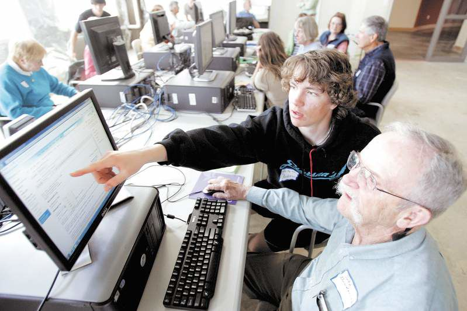
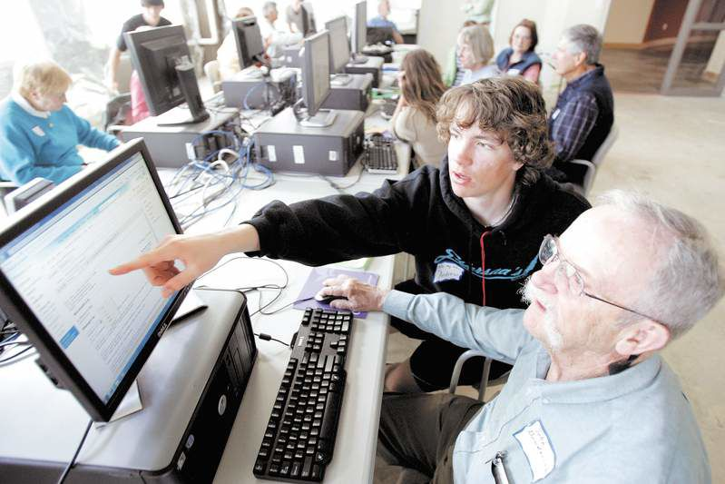

How We Help
Most seniors I know find their Tablet or Phone or Computer frustrating at times. And in today's world, where almost everything has to be done by computer, that frustration is affecting many seniors' quality of life. There are fantastic services available today that must be accessed online. From shopping, food, grocery and prescription delivery, online appointment setting, viewing medical history and test results, books, games, banking, tax preparation, bill payment, etc., etc., etc. But all of these "conveniences' are all worthless if you can't use them.
 

Few Ways We Help
Issues using your Tablet or Phone or Computer or Smart tv
Can't find what you need online?
Want to see as well as talk with your kids and grand kids?
Frustrated trying to use the Internet or Wi-Fi?
Want to read and watch shows on your device?
Forgotten your passwords or how to use an app?
And lots, lots more.......